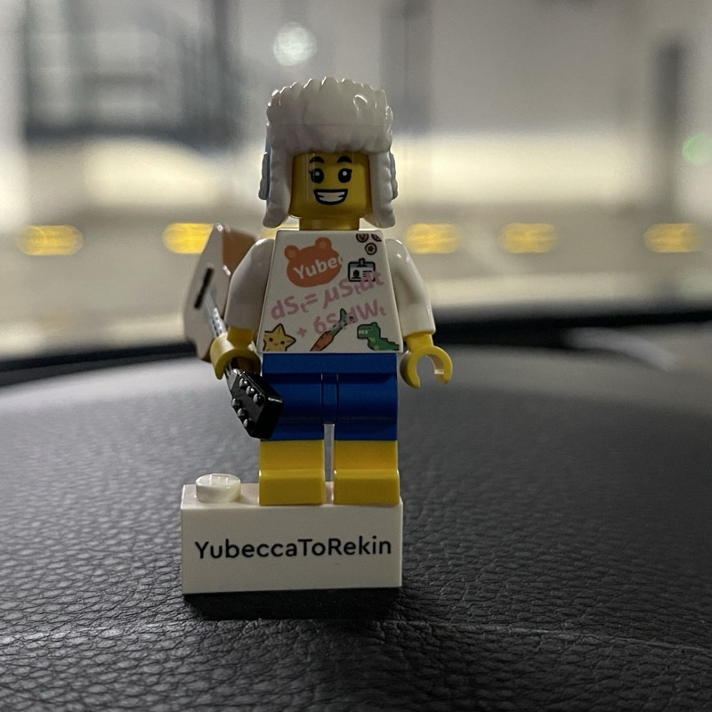

Yukin (Jiangtian) Pan
AI Engineer · HomeTeam Live
I am an AI engineer at HomeTeam Live, where I work on AI-powered video broadcasting for live sports. Previously I was a computer vision researcher at KUANGJINGBOXUAN, an AI engineer at the AI Lab of vivo, and an AI research intern at JD AI Research. I hold a Bachelor's degree from Wuhan University and a Master's degree from The Ohio State University.
My work spans low-level and high-level vision: video and image quality restoration (denoising, super resolution, frame interpolation), segmentation, and video object tracking. Much of it ships on mobile devices, so high-performance computing with OpenCL and CUDA is part of the job.
In the long term, my goal is to become a full-stack AI R&D engineer.
Updates
- Apr 2025 One paper accepted at the MICCAI 2024 DIAMOND Challenge
- Apr 2025 One paper accepted at the MICCAI 2024 MARIO Challenge
- Oct 2024 One paper accepted at ICCS 2024
- Aug 2023 Night Video Quality Enhancement SDK shipped on Autel EVO Lite — installed on 10,000+ drones
- Dec 2022 Night Video Quality Enhancement SDK shipped on Honor Magic 5 — installed on 1M+ phones
- Jun 2022 Ultra Night Video SDK shipped on Mi 12 — installed on 1M+ phones